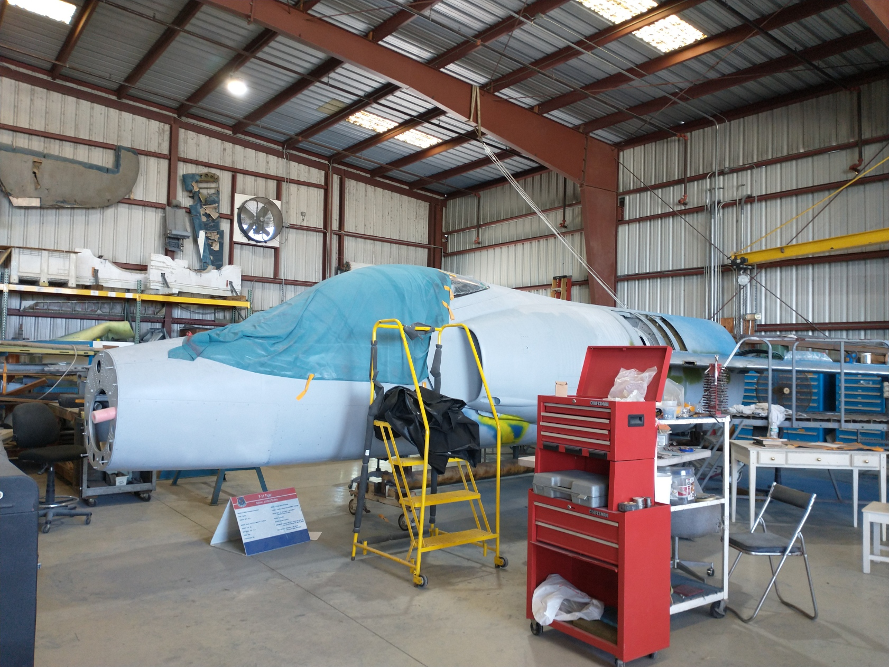
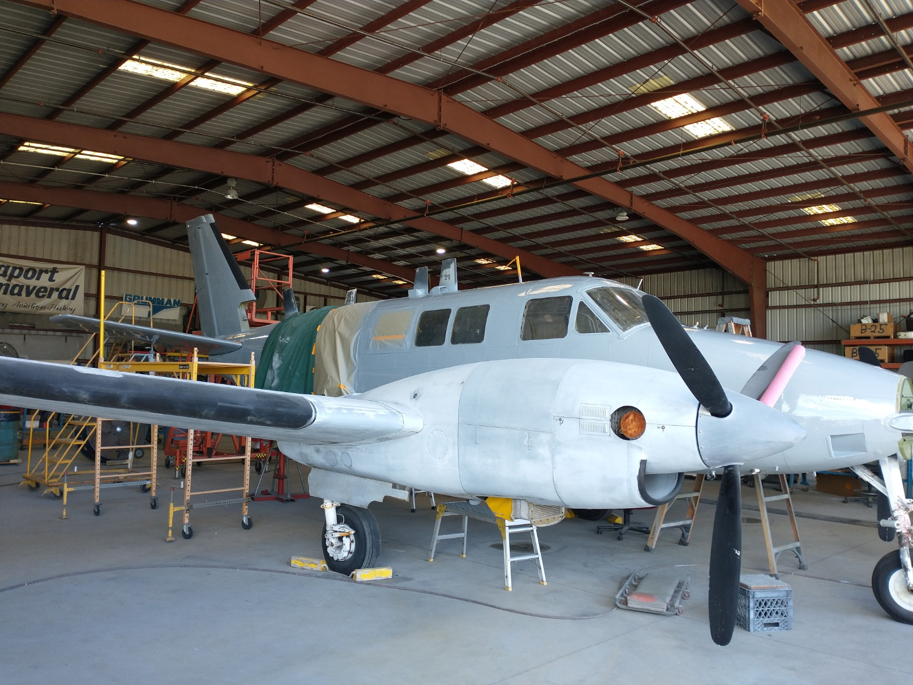

Most Recent Project:
F11 Tiger & RU21a UTE Restoration
Working on restoration of F11 Tiger and RU21a UTE aircraft to the last service accuracy. Utilized sheetmetal and fastener tightening skills. F11 is expected to be displayed in LAX upon completion.  
Urban Air Mobility Course Project
Urban Air Mobility/Electric/Hybrid Aircraft Course Project
Analyzed CityAirbus aircraft performance based on the public domain informationAs the final project of the course, my team presented CityAirbus as our imaginary startup company's new product. The classmates were also virtural investors, and competed to make more money than others to virtually sell UAMs.
My team/company made more money than other teams as a result. The selling points were the complete monocoque structure and the redundant propulsion system.
Also, the team's strongest point was that we marketed towards the Walt Disney World as the first customer, where the new UAM system can replace the monorails, while using the Reedy Creek District as a test ground for the UAM infrastructures.

PAVER
"Personal Aerial Vehicle, Embry-Riddle"2022 - Present
Worked on torsional structural vibration issues.
The project is funded by FAA to prepare for incoming era of Urban Aerial Mobility.

Aircraft Assembly
Quality Control Inspector
Greensboro, North Carolina, United States of America
2017 - 2020
Worked on small business jets’ assembly line as a Quality Control Inspector. Inspected from nose to tail, wing-tip to wing-tip.
Assembly process included wing & fuselage mating, fastener torquing, function tests, etc.
Learned how to read blueprint, in return, learned how to design CAD models & CAD generated blueprints better.
Capstone:
Aircraft Design
AIAA Undergraduate Team Design Competition
Prescott, Arizona, United States of America
2016 - 2017
Designed 6 & 8 passenger intercontinental business jets.Analyzed aircraft performance of historical aircraft in the same category.
Designed, 3D printed, and assembled wind-tunnel model and tested at different configurations.
The wind-tunnel model was later re-painted and displayed as a static model on campus.
Also printed and assembled structural and interior arrangement models.

Para-wing Aerodynamic Analysis
Using Wind-Tunnel
Prescott, Arizona, United States of America
2016 - 2017
Published "Investigation of a Morphable Parawing for Unmanned Aerial Vehicle Application" (PDF)through the Journal of Aircraft, AIAA with Dr. Lance Traub.
Heavily utilized 3D printing, Wind Tunnel, water table, and AVL

AIAA DBF competition
CAD Design
and
Drafting team lead
Prescott, Arizona, United States of America
2015 - 2016
Built two aircraft: a small airplane that carries a Gatorade bottle as a payload, and a bigger plane that could carry the other inside.
Placed 12th out of over 140 teams from across the globe.
The flight competition was at Wichita, KS.

Side Projects:
Cars & Motorcycles
2015 - Present
Remove & Replacement: alternator, power steering pump, fuel/brake/oil hoses, various belts, brake pads & rotors, exhaust pipes, etc.
Rebuilt a starter.
Regular maintenance (Engine/transmission/coolant/brake fluid change, tire pressure).

Side Projects:
Musicians' Tools & Techs
2020 - Present
Built a wood mockup for sizing and tested its usability.
Hot-Rod Guitar: Hand drill, minor woodwork, painting, wiring, soldering, trouble shooting, wrenching/screwing.
Resistance & continuity tests utilizing a multi-meter.
Dimension/layout/sizing to 1/1000th inches for accurate string tuning.
Click image below for "details"